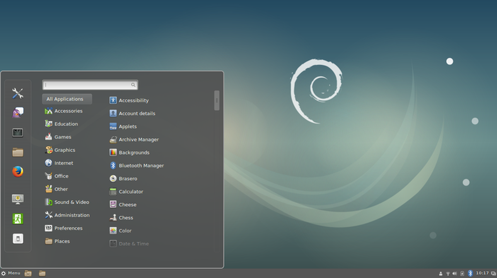
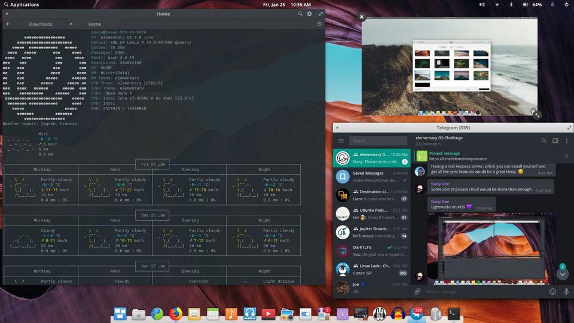
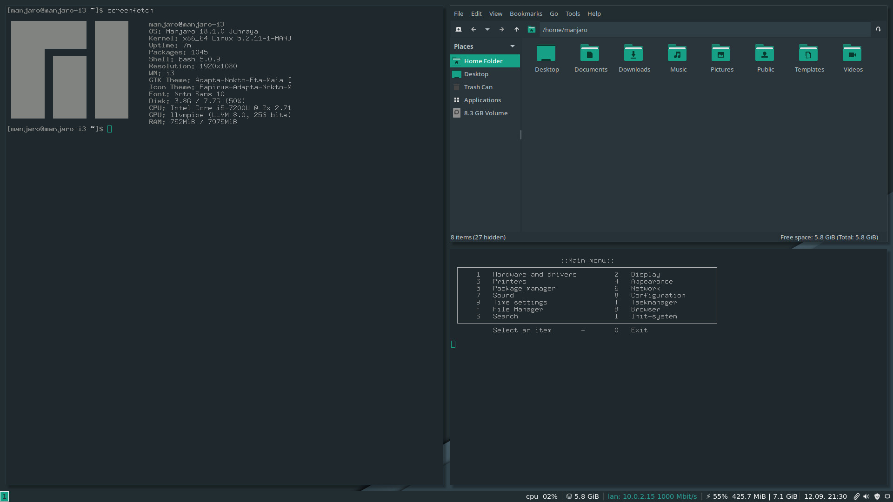
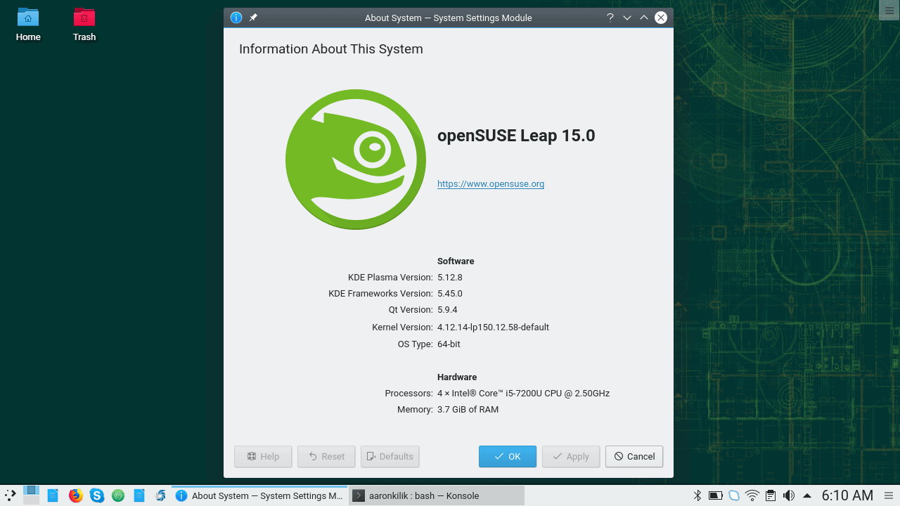
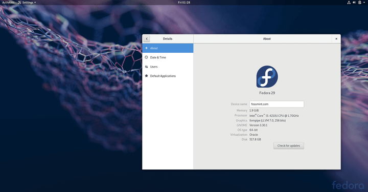

Dystrybucje dla zaawansowanych użytkowników
Debian
Debian – projekt wolnej dystrybucji systemu operacyjnego GNU/Linux oraz GNU/kFreeBSD realizowany przez ochotników na całym świecie. Wewnątrz Debiana istnieją również projekty, mające na celu stworzenie dystrybucji systemu GNU/Hurd, inne odmiany BSD, a nawet dystrybucji wolnego oprogramowania na platformę Windows.
Debian cieszy się opinią stabilnego systemu o wysokiej jakości i łatwego do aktualizacji[potrzebny przypis]. Ze względu na dbałość o jakość i bezpieczeństwo dystrybucji, nowe wersje stabilne pojawiają się stosunkowo rzadko, często dochodzi też do opóźnień w ich wydawaniu.

elementary
Elementary OS – pochodna dystrybucja systemu operacyjnego GNU/Linux, bazująca na dystrybucji Ubuntu.
Fundamentalną osią dystrybucji elementary OS jest jej środowisko graficzne o nazwie Pantheon które, zgodnie z wytycznymi twórców zawartymi w Human Interface Guidelines[3], kładzie nacisk na:
łatwość obsługi od samego początku użytkowania
szybkie i proste uczenie się funkcjonalności systemu
minimalizację przystosowywania i ręcznej zmiany ustawień systemu
Pantheon wykazuje znaczne podobieństwo do interfejsu użytkownika systemu operacyjnego macOS.
System charakteryzuje brak aktywnego pulpitu, co oznacza, że nie da się umieszczać na nim skrótów, folderów ani aplikacji, tak jak ma to miejsce w wielu środowiskach graficznych i innych, popularnych systemach operacyjnych.
Użyte w Elementary OS graficzne środowisko Pantheon bazuje na bibliotekach graficznych GTK+ i jest zarazem forkiem innego środowiska graficznego – GNOME.
Pantheon składa się między innymi z:
Pantheon Greeter będącego ekranem logowania bazującym na LightDM
menedżera okien bazującego na Mutter (Vala/GTK3)
WingPanel
Slingshot – menu prezentujące aplikacje
Plank – pasek zadań u dołu pulpitu z ikonami aplikacji do ich szybkiego uruchamiania

Manjaro
Manjaro Linux (inna używana nazwa: Manjaro) – pochodna dystrybucja systemu operacyjnego Linux bazująca na dystrybucji Arch Linux.
Instalator systemu operacyjnego wykorzystywany przez dystrybucję Manjaro nosi nazwę Calamares i został stworzony przez programistów: Rolanda Singera, Guillaume Benoita i Philipa Müllera. Od wersji 0.8.9 Manjaro Linux posiada pełne polskie tłumaczenie (składniki systemu operacyjnego i GUI użytkownika – pulpit).
Powiązania Manjaro z Arch Linuksem:
Manjaro powstał w oparciu o dystrybucję Arch Linux, ale wykorzystuje własne repozytorium oprogramowania. Założeniem twórców dystrybucji jest przyjazność dla użytkownika, przy jednoczesnym zachowaniu podstawowej kompatybilności z dystrybucją Arch Linux. W szczególności, podobnie jak Arch, Manjaro korzysta z menedżera pakietów Pacman i nieoficjalnego, dodatkowego repozytorium oprogramowania AUR (skrót od: Arch User Repository).
Manjaro zawiera trzy oficjalne repozytoria oprogramowania: Stable – którego pakiety zostały sprawdzone i uznane za stabilne przez twórców dystrybucji; Testing – pakiety aktualnie testowane, potencjalnie niestabilne; Unstable – pakiety nieprzetestowane i potencjalnie groźne dla prawidłowości działania systemu.

openSUSE
Projekt openSUSE to przedsięwzięcie skupionej wokół niego społeczności, sponsorowane przez firmę SUSE.
Projekt promuje zastosowania Linuksa, dostarcza darmowy i łatwy dostęp do najbardziej przyjaznej i dopracowanej dystrybucji na świecie - openSUSE. Projekt openSUSE oferuje wszystko co jest potrzebne zaawansowanym deweloperom Linuksa, a także początkującym entuzjastom otwartego oprogramowania.
Proces powstawania dystrybucji jest otwarty, a społeczność ma możliwość jej współtworzenia. Poszczególne kompilacje dystrybucji i wydania stabilne są umieszczane w serwisie opensuse.org.

Fedora
Fedora – nazwa następcy wolnej dystrybucji Red Hat Linux rozwijanej przez Fedora Project i finansowanej głównie przez Red Hat.
Twórcy Fedory stawiają na innowacyjność, dlatego też kolejne wydania pojawiają się często i zawierają najnowsze dostępne oprogramowanie, nawet jeśli prace nad stabilną wersją nie zostały jeszcze ukończone. Z tego powodu oraz faktu ścisłego powiązania z Red Hatem, często, lecz niesłusznie Fedorę określa się mianem „poligonu Red Hata”. W czerwcu 2005 utworzono Fundację Fedora, mającą w zamierzeniu koordynować prace nad Fedorą w większym stopniu, niezależnie od Red Hata.
Fedora jest stosowana zarówno jako system operacyjny dla komputerów domowych, jak i serwerów. Nazwa dystrybucji pochodzi od rodzaju kapelusza.

Źródła: Wikiepdia
|